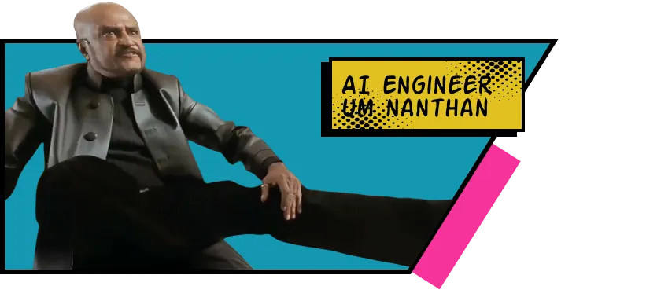

hi i'm jayadithya
AI / ML engineer
i build ai systems bottom-up, from tokenizers and pipelines to inference and eval.
chennai, tamil nadu, india.
view resume
the t-shaped engineer
broad across the bar. deep down the stem.
Frontend venuma?
Frontend iruku.
Backend venuma?
Backend iruku.
UI/UX venuma?
UI/UX iruku.
AI venuma?
AI iruku.
Projects
every project below answers three questions: what problem it solves, what i gave up to solve it, how it works.
tamil tokenizer
- problem
- general subword tokenizers split tamil into excessive character fragments, ballooning sequence length and slowing model training compared to english.
- tradeoff
- writing a custom bpe engine in rust gained raw training speed, but meant building merge tracking and hugging face export tooling from scratch.
- solution
- 1,135-token base vocabulary around tamil conjunct stems, aho-corasick parallel merges with rayon, and csr indexing. beats mbert compression by 36.9% with verified 100% decode fidelity.
triagemate
- problem
- static analyzers emit hundreds of noisy semgrep alerts, burying exploitable security flaws beneath low-priority warnings.
- tradeoff
- training on 416 real pre- and post-fix commit diffs avoided synthetic collapse, but required statement anchoring to align unnumbered ast snippets with line alerts.
- solution
- fine-tuned liquid ai d1-3b hybrid ssm using contrastive lora to rank alert exploitability in 12-14 ms on an nvidia t4. reached 0.6594 within-rule auc across 174 real cve alerts.
kaggle automation
- problem
- long-running kaggle gpu experiments silently hit 12-hour session limits and drop unsaved checkpoints when sweeps stall.
- tradeoff
- streaming multi-gigabyte zip outputs straight to disk without memory buffers kept container footprints low, but required strict pre-flight disk space guards.
- solution
- fastapi control plane that shards sweeps across gpu/tpu kernels, sends telegram alerts at the 11-hour mark, and streams logs over websockets. evaluated speculative decoding on dual t4s (0.5567 draft acceptance).
fitcheck
- problem
- multimodal outfit recommendation models are too large to run privately on mobile devices, while cloud services require uploading personal wardrobe photos.
- tradeoff
- distilling an 8b vision-language teacher into a 2b student saved 3.1x vram, but required 28k lora steps across 538k caption-qa pairs to preserve 92% scoring quality.
- solution
- offline-first react native android app with local sqlite, weather-aware outfit scoring via open-meteo, and on-device gguf inference. validated in a blind study and published in ieee tqcebt 2026.
sivabharani comments
- problem
- locating specific community discussions across 1,400+ tamil tech videos meant manually scrubbing through hundreds of hours of raw audio.
- tradeoff
- relying on free-tier groq api instances kept compute free, but demanded custom worker scheduling to prevent 429 rate limit errors across 1.18m chunks.
- solution
- 27-key worker pool with dynamic reset-header tracking and 65-second windowing. micro-chunk timestamp pinning indexes commenter names into meilisearch for sub-second jumping to exact video seconds.
txt
- problem
- critical payments, gps coordinates, and images cannot be sent in rural or disaster zones when cellular data and wi-fi networks fail.
- tradeoff
- gsm-7 limits payloads to 153 characters per sms, requiring grayscale posterization down to 1.2 kb instead of transmitting full-color photos.
- solution
- offline android app that serializes photos, qr codes, and upi requests into chunked base36 packets with crc32 checksums. includes a native kotlin contentobserver module for sub-100ms sms arrival detection.
no projects found in this category... yet!
where i've been
ai research intern
07/2025 - 10/2025blubridge technologies · chennai
- built operator-fusion passes in mlir, cutting kernel launch overhead ~20%.
- lowered dialect ops to llvm ir with shape inference for dynamic tensors.
- hardened passes with 40+ lit tests wired into ci.
b.tech, artificial intelligence and data science
2026dr. m.g.r. educational and research institute · chennai · 8.0/10
first author, ieee tqcebt 2026
2026"FitCheck: A Multi-Modular AI Framework for Cross-Cultural Fashion Recommendation via Black-Box Data Distillation" · pune, india
read the paper (pdf) · doi 10.1109/tqcebt67648.2026.11681836
where i commit
stats, languages and streak - pixel cards redrawn straight from the github api every day.


Design and Development Craft
